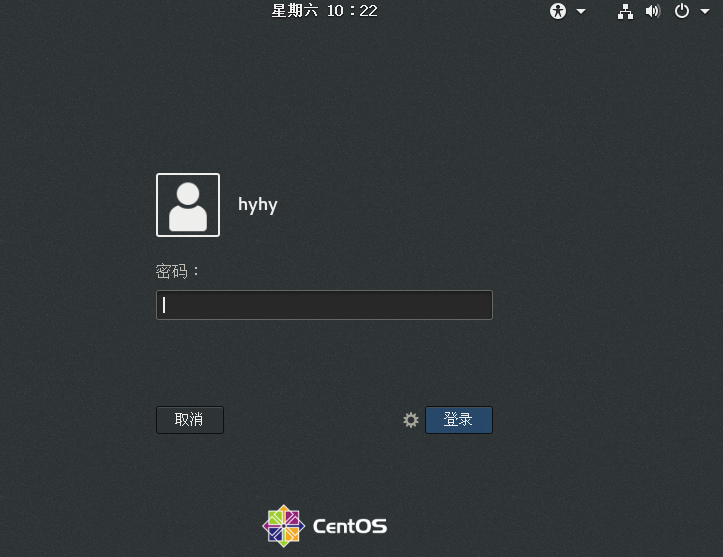
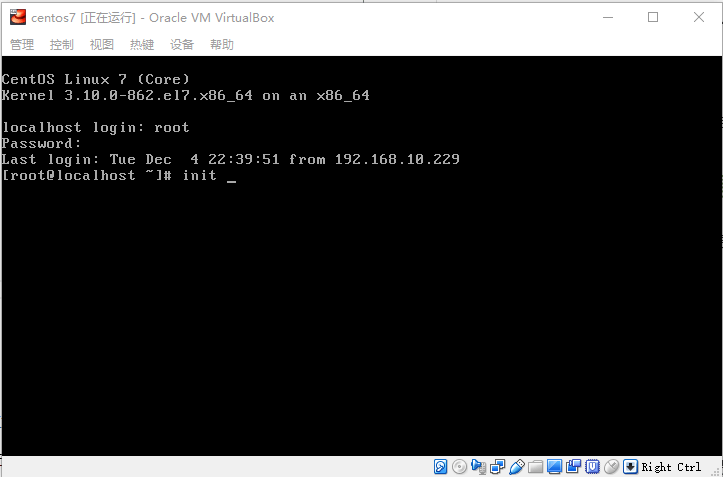

Linux 简介和安装
为什么要学习Linux
Linux 和我们熟知的 Windows 一样，都是 操作系统 。
那么操作系统又是什么？
简单说，操作系统是 管理 计算机硬件 和 所有应用程序 的 系统软件 。
它对下管理机器所有的硬件，对上管理着应用程序。
负责加载、运行、调度、终止应用程序，并提供编程接口和服务给应用程序调用（使用各种硬件资源），完成各种各样的功能。
现在的软件系统，通常都有服务端，比如：京东、淘宝、微信、美团、网易等等，都有个服务端系统提供数据信息。
这些web 服务 80% 以上都是运行在Linux操作系统上。
大家如果成为软件工程师，开发服务端程序，基本都是要在Linux上运行
而且IT职位面试的时候，Linux相关操作，是常常会被问到的。
所以你应该学会使用Linux操作系统。
本课程，就是讲解Linux的常见操作。
在开始学习之前，我们首先要知道Linux这个单词怎么读。很多人用了好多年Linux， 这个词的读音都是错的。
Linux之父Linus Torvalds 是这样发音的 /’lɪ.nəks/
安装Linux
Linux 就是一个操作系统， 和大家熟悉的 Windows 一样。
所以我们要使用它，就需要先安装到电脑上。
你可以安装在一台单独的电脑上， 也可以安装在虚拟机里面。
虚拟机，就是在你的电脑上用软件模拟的电脑（是的，软件可以模拟硬件的运行环境， 比如你在电脑上玩过街机游戏吗？这些就是电脑软件模拟的街机硬件，运行街机游戏），这样你就可以在模拟的电脑里面 安装其他的操作系统， 比如Linux。
这样我们就在一个程序窗口里面运行另外一个操作系统了。
Windows操作系统有 Windows 7 、Windows 10、 Windows server 2016 等等众多的版本。
Linux 版本更多，比如 Ubuntu、RedHat、CentOS、Debian、Fedora等，这些都是Linux系统的不同发行版本.
服务器开发使用 CentOS 比较多，我们教程就以 Centos 为例讲解如何安装。
运行虚拟机软件的操作系统 我们称之为 host操作系统， 虚拟机 软件里面的操作系统称之为 guest操作系统
本文中的 host 操作系统是 Windows 10 ， 而 guest 操作系统是 CentOS7
虚拟机安装 CentOS 分为两步
-
创建虚拟机（就是虚拟电脑）
-
在虚拟机上安装 CentOS 操作系统
在虚拟机安装CentOS，大家需要下载 CentOS的安装光盘镜像文件。
在国外下载比较慢，推荐到网易的镜像站点下载
视频讲解-虚拟机安装CentOS
- 安装CentOS ：
第 1 步
- 安装CentOS ：
第 2 步
- 安装CentOS ：
第 3 步
- 安装CentOS ：
第 4 步
登录操作
Linux 是支持多用户的操作系统，什么叫多用户操作系统？
就是说，多个人都可以使用安装了Linux的同一台电脑。 其中有管理员用户（比如安装过程中就输入密码的那个root用户），普通用户。
不同的人有不同的权限，所以我们需要在Linux操作系统上创建多个账号给他们使用，对应不同的权限。
所以用户使用系统前必须先输入用户名密码登录，这样Linux才知道你是哪个用户。
Linux用户可以有如下两种登录方式：
-
Linux主机直接登录
-
在另一台电脑远程登录
主机直接登录
主机直接登录就是用户直接到安装了Linux的那台计算机上登录。
可以在图形桌面上登录，也可以是命令行界面下登录
图形桌面登录界面如下：

命令行登录界面如下：

登录时，系统会提示你输入账号，并且要求你输入对应的密码。
登录成功后，会显示命令行提示符，如下
[root@localhost ~]#
大家只要 在后面输入Linux命令即可进行操作了。
大家可能习惯了使用Windows图形界面，但是在使用Linux的时候，往往更方便的是用命令行，输入各种Linux命令进行操作。
面试的时候，问的也都是 各种常见的命令，所以大家要学会在命令行下进行操作。
远程登录
工作中运行被测系统的Linux主机通常不在自己的身边，而是在实验室里面，或者在远程机房（比如 阿里云主机），经常跑到主机所在的地方进行登录是不方便的。
这时我们通常采用远程登录的方式，通过网络登录访问Linux主机。
我们后面的课程讲解，大多是远程登录完成，请大家学会使用远程登录。
要进行远程登录，我们需要一个远程登录的软件，最常用的就是 PuTTY。
大家可以点击这里，下载PuTTY
如何使用PuTTY进行远程登录？ 请观看下面的讲解视频。
shell和Linux命令
我们在远程终端是通过Linux命令（command）来操作计算机的。
而Linux主机上谁来接受我们输入的命令，并执行命令的呢？ 那就是 Shell程序。
Shell有很多种，标准shell (sh), Bourne Again SHell (bash), Korn shell (ksh), C shell (csh)，现在主流的Linux的缺省是bash，所以我们主要针对它进行说明。
Shell在后面的章节还会讲到。目前我们只要知道Linux通过Shell程序来接收我们的命令，并且执行我们的命令。
命令通常是一个个的可执行程序，比如 ps、ls、netstat等等
在Shell提示符下，就可以输入Linux命令。Linux命令的基本格式如下：
command 参数1 参数2 ... 参数n
Linux命令由一个命令（command）和零到多个参数构成，命令和参数之间，以及参数与参数之间用空格隔开。
Linux的命令区分大小写，且命令和参数之间必须隔开。
比如，下面执行了两条 Linux命令：
ls /tmp
ls /Tmp
但tmp和Tmp是两个不同的目录。
如果这样写 ls/tmp ，没有空格隔开的话，‘ls/tmp’ 整个 会被Shell当做一条没参数的命令。
注销（退出Linux系统）
在每次使用完后，一定要进行注销（或者说退出），以防他人通过你的帐号进入系统。
在Linux提示符下，运行exit命令，即可退出本次登录
或直接按组合键 Ctrl+d 。
关机与重启
Linux主机的关机方法为：
root用户登录后，输入命令 poweroff 表示立即关机。
Linux主机的重启方法为：
root用户登录后，输入命令 reboot 表示立即关机。
作业和练习
请根据本节教程，在虚拟机上，安装 CentOS 7 。
安装完成后，练习 使用 Putty 远程 登录 和 本机直接登录。
练习命令 退出登录、和关机 操作。
扫码分享给朋友，一起学更有动力哦
领取 Selenium 全套练习讲解视频
微信加白月黑羽账号 18502556834 为好友， 把指定视频分享到朋友圈，1天后，即可领取